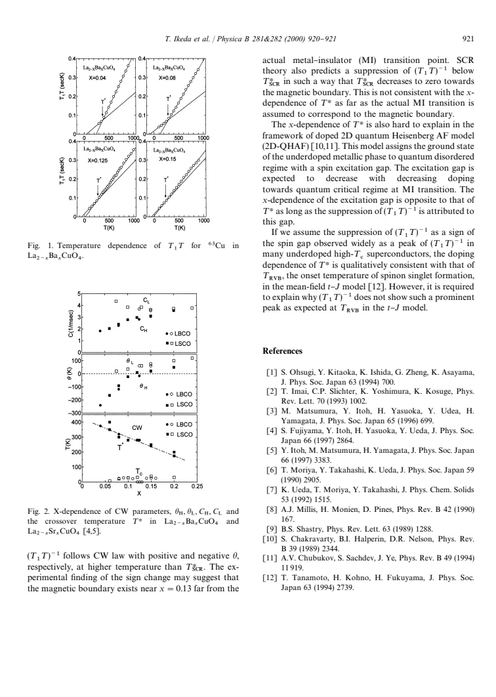

experiment · Ikeda · supplied source 2000
Doping level dependence of low-frequency spin dynamics in La₂₋ₓBaₓCuO₄ studied by Cu-NQR
Planar Cu relaxation crosses between two Curie-Weiss regimes, and its doping trend challenges a simple identification of the crossover with the metal-insulator boundary.
The question: How does low-frequency spin dynamics change with Ba doping and temperature in LBCO?
Before you start: the few terms you need
- NQR: resonance set by the electric field gradient without an applied field
- T₁: time for nuclear magnetization to return toward equilibrium
- Curie-Weiss law: response proportional to C/(T + θ) in this paper's convention
See → explain → test
Understand it in four pictures.
Picture 1 / 4
One probe, four compositions
Look for: Follow planar copper in x = 0.04, 0.08, 0.125 and 0.15 samples, up to about 900 K.
Swipe across the picture to read every label, or enlarge it below.
- Four Ba contents
- Planar ⁶³Cu NQR
- Measure T₁(T)
- Compare doping
Teaching measurement map; each source sample has its own relaxation curve.
This is a broad-temperature local spin-dynamics study, not a low-temperature stripe diffraction experiment.
Check the original: PDF p. 1
Picture 2 / 4
Invert the rate to see the crossover
Look for: A Curie-Weiss relaxation rate becomes a straight line when plotted as T₁T.
Swipe across the picture to read every label, or enlarge it below.
- High temperature
- Below T_H
Teaching comparison; source Fig. 1 plots T₁T, not (T₁T)⁻¹.
Two slopes in T₁T expose two regimes more clearly than a single rate curve.
Picture 3 / 4
Use LSCO as a comparison
Look for: Compare the crossover temperature and fitted parameters across Ba and Sr doping.
Swipe across the picture to read every label, or enlarge it below.
- Ba-doped LBCO
- Sr-doped LSCO
Teaching comparison; no synthetic experimental values.
The similar trends point to shared CuO₂-plane physics despite different structural behavior.
Check the original: PDF p. 2
Picture 4 / 4
Make the model explain the trend
Look for: A theory must explain both the crossover's magnitude and how it moves with doping.
Swipe across the picture to read every label, or enlarge it below.
- Two CW regimes
- Model doping prediction
- Compare T_H(x)
Teaching inference chain; the report identifies tensions for SCR and quantum-Heisenberg interpretations.
Calling T_H a spin gap is an interpretation that still needs the correct doping trend and line shape.
Check the original: PDF p. 2
Predict before revealing
A sample's T₁T rises above the extrapolated high-temperature line on cooling. What does that imply?
Choose an answer, then compare the reasoning.
T₁T is the inverse of the discussed rate. Its rise implies suppression of the low-frequency rate; it does not determine the complete spin spectrum.
Read the answer
Its (T₁T)⁻¹ relaxation rate is suppressed relative to that extrapolation T₁T is the inverse of the discussed rate. Its rise implies suppression of the low-frequency rate; it does not determine the complete spin spectrum.
Go deeper Follow the full argument
What was measured and why it matters
Ikeda and colleagues measured the spin-lattice relaxation time of planar ⁶³Cu by a phase-coherent spin-echo method in four La₂₋ₓBaₓCuO₄ compositions. The unusually wide temperature interval, extending to about 900 K, lets them ask whether the same description works well above the superconducting and structural transitions. T₁ records how nuclear magnetization exchanges energy with fluctuating electronic fields. Dividing its inverse by temperature gives (T₁T)⁻¹, a measure of low-frequency spin spectral weight with the copper hyperfine weighting. The experiment does not directly measure the complete energy-dependent excitation spectrum. It therefore offers a demanding test of spin-dynamics models without, by itself, identifying every microscopic mode or a unique gap mechanism.
Why the paper plots T₁T
The source's Fig. 1 plots T₁T rather than the commonly discussed (T₁T)⁻¹. This inversion is useful: if the rate follows C/(T + θ), its inverse follows (T + θ)/C, a straight line. The measured curves have distinct high- and low-temperature linear regions separated near T_H. A single Curie-Weiss law cannot cover the entire dataset. The low-temperature rate falls below what extrapolating the high-temperature regime would suggest. The suppression is a crossover in low-energy magnetic response, not simply the superconducting transition. To read the figure correctly, an upward displacement of T₁T means a reduced relaxation rate. Confusing the plotted quantity reverses the physical conclusion. The fits use high- and low-temperature constants separately, so a fitted Weiss temperature is not interchangeable with the crossover temperature. In particular, a sign change in θ_H and a rising crossover under underdoping are two different observations. A successful microscopic account must explain both, together with the lack of a strong relaxation maximum, rather than match only one line in the figure.
Doping organizes the comparison
Figure 2 collects C_H, C_L, θ_H, θ_L and T_H as functions of doping and compares the LBCO results with earlier LSCO measurements. The broad similarities are central to the report. The high-temperature Weiss parameter changes sign near x ≈ 0.13, while T_H grows as doping is reduced. These facts constrain any theory that treats the crossover as proximity to a magnetic boundary. Ba and Sr substitution need not produce identical low-temperature structures, yet this shared trend suggests a common feature of doped CuO₂ planes at the frequencies sampled by NQR. It does not establish that the two materials have identical stripe order, superconducting coherence or oxygen stoichiometry.
Three interpretations and their difficulties
The authors compare the results with self-consistent renormalization theory, a doped two-dimensional quantum Heisenberg antiferromagnet, and mean-field t-J ideas. In the SCR description, the change in sign of the high-temperature Weiss parameter can suggest a magnetic boundary near x ≈ 0.13, away from the actual metal-insulator boundary. Associating the latter boundary with the predicted crossover produces a doping trend inconsistent with observation. In the quantum-Heisenberg interpretation, a gap decreasing toward the metal-insulator transition also conflicts with T_H increasing upon underdoping, if the suppression is attributed directly to that gap. A singlet-formation scale in the t-J picture has the more appropriate qualitative doping trend, but the predicted prominent peak is not seen.
How to use this short report
The most useful reading exercise is to separate observation, fit and interpretation. The observation is a change in the temperature dependence of Cu relaxation. The empirical fit uses two Curie-Weiss parameter sets. The interpretation links their trends to magnetic correlations or singlet formation, with unresolved tensions. The absence of a prominent peak is itself informative; it prevents automatically transferring the behavior of other underdoped cuprates onto LBCO. Because this is a two-page proceedings report, it supplies only a compact account of sample methods and uncertainty. Use the displayed trends as model constraints, and consult the explicitly cited underlying studies for a more complete experimental record. Do not turn its proposed spin-gap language into a calibrated excitation gap.
Translate the mathematics Key equations and symbol meanings
(T₁T)⁻¹ = C/(T + θ); T₁T = (T + θ)/C
Symbols: T: temperature; T₁: nuclear spin-lattice relaxation time; C and θ: fitted Curie-Weiss parameters, separately high- and low-temperature.
The inverse plotting convention converts each CW regime into a line. These are empirical regimes, not a universal fit across all temperatures.
Read the evidence A guided look at the original figures

Open the full original page ↗
Open the full original page ↗
What this paper does—and does not—establish
- Two-page historical proceedings report; sparse method and uncertainty detail.
- NQR samples low-frequency weighted fluctuations, not a full excitation spectrum.
- Proposed spin-gap identification remains model dependent.
Explain it back.
Try answering aloud before opening the explanation.
Why use two CW fits?
The measured inverse rate has two linear regimes; one parameter set cannot represent the full temperature dependence.
Does T_H equal T_c?
No. T_H is the crossover in the relaxation regime, discussed as a possible spin-gap or singlet scale.
What makes the doping trend a theory test?
A theory must reproduce T_H increasing with underdoping and the Weiss-parameter evolution, not just a suppression in one sample.
Connect the next paper.
Source version, reading coverage and preservation
Complete extracted text and rendered Fig. 1/Fig. 2 inspected
Reviewed body pages: 1, 2. References not independently re-read; no separate supplement supplied.
Original file retained byte for byte. SHA-256: 09f6ca97691dec1808f329966c7122e7b714e64f02f9273f5bc32f1703679f27
Filename: PhysicaB - Ikeda - Doping dependence of spin dynamics in LBCO by Cu NQR - 2000.pdf.